Les classes, les projets et les sorties, rassemblés année par année et établissement par établissement. Cliquez sur une photographie pour la voir en grand.
- Sciences au collège Great Neck
- Blasons et art pariétal
- Sortie à Jamestown et Yorktown
- Commémoration de Yorktown
- L’Antiquité au collège Great Neck
- La Révolution française, en 4e
- Arts et histoire à Crossroads
- La Seconde Guerre mondiale à Frank W. Cox
- John B. Dey, au fil des trimestres
- Les viennoiseries pour les établissements d’accueil
2026-2027
Sciences au collège Great Neck
Les élèves de 6e et de 5e conduisent une expérience de germination : semis de haricots en godets de tourbe, suivis semaine après semaine.

La préparation des godets avant le semis
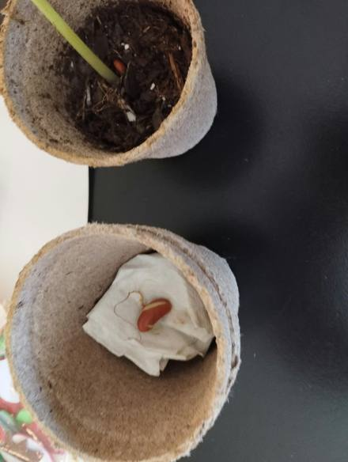
Une graine de haricot posée sur du coton humide
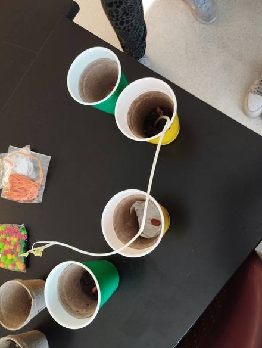
Chaque godet est numéroté pour comparer les conditions de culture

Deux semaines plus tard, les premières feuilles
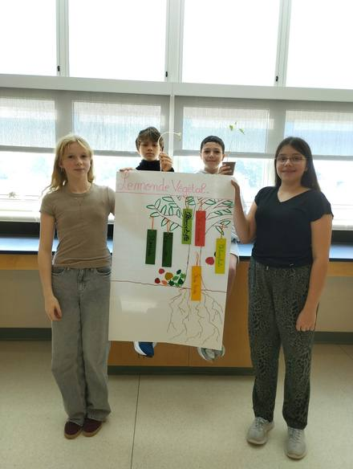
La présentation des résultats sur une affiche


Blasons et art pariétal
Chaque élève compose un blason qui dit quelque chose de lui, et les 6e recréent une grotte ornée préhistorique sur le mur de la classe.
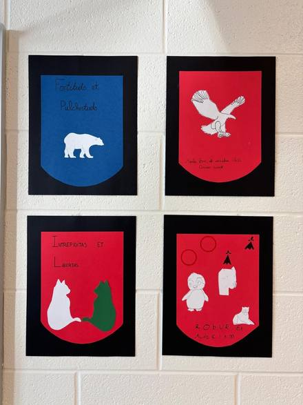
Les blasons composés par les élèves
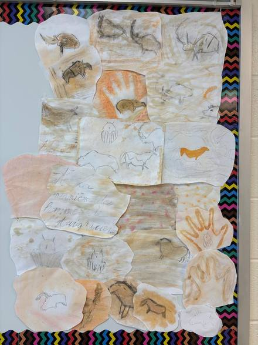
Une grotte ornée recréée, mains négatives et animaux
2025-2026
Sortie à Jamestown et Yorktown
Les classes de collège et de lycée ont passé la journée au Jamestown Settlement : les répliques de navires amarrées au ponton, le village powhatan reconstitué et le fort James de 1607, où les élèves ont manipulé des armures d’époque.
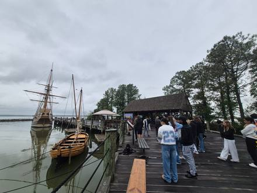
Les répliques de navires au ponton

L’embarquement à bord du Susan Constant
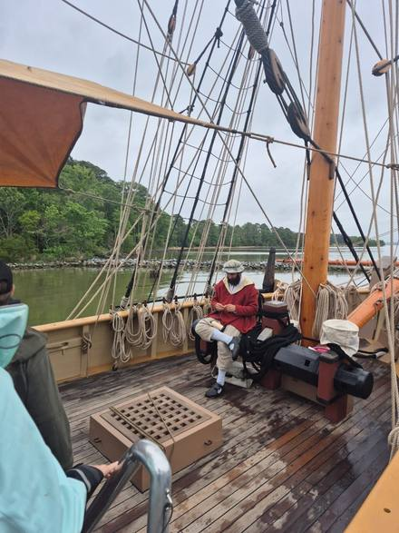
Un interprète raconte la vie à bord

L’essayage d’un casque au fort James

L’armure d’époque, expliquée et manipulée
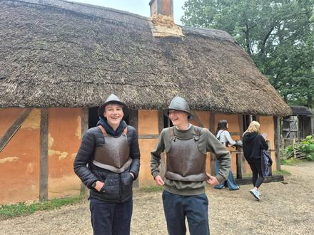
Devant les maisons de torchis

Le village powhatan reconstitué
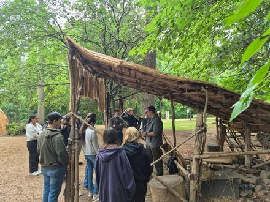
L’abri où l’on creuse les pirogues

Le bois fendu, prêt pour la construction
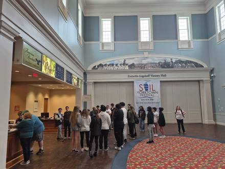
L’arrivée au musée


Commémoration de Yorktown
Chaque mois d’octobre, la victoire de 1781 est commémorée à Yorktown, un anniversaire franco-américain auquel l’école participe.
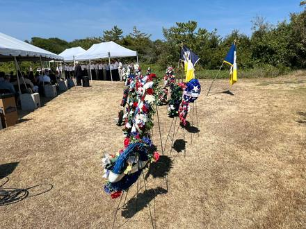
Les gerbes alignées avant la cérémonie

La réception qui suit

L’Antiquité au collège Great Neck
Une année passée avec le monde antique : les voyages d’Ulysse, les jeux Olympiques peints sur un vase grec, les tablettes d’argile et la calligraphie.
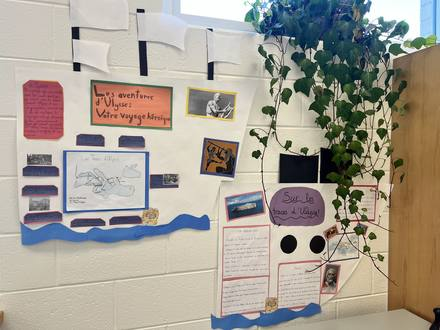
Les voyages d’Ulysse, cartographiés sur le mur de la classe
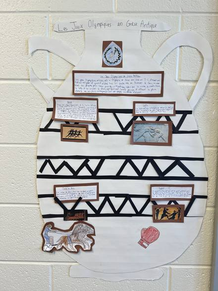
Les jeux Olympiques de la Grèce antique, peints sur un vase

Un second vase, surmonté du logo de l’école
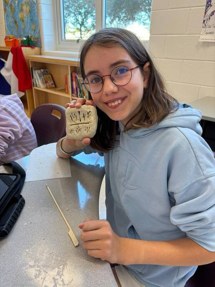
Une tablette d’argile, terminée

L’écriture dans l’argile

La préparation de l’encre pour la calligraphie
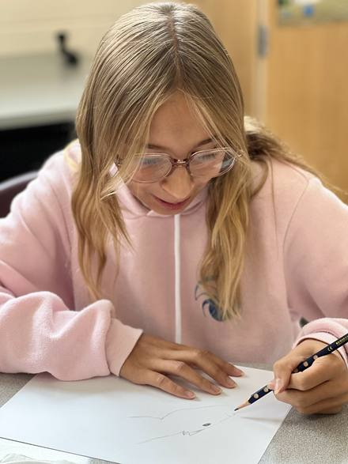
La calligraphie, plume à la main

Des prénoms écrits en hiéroglyphes
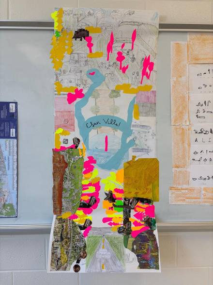
Une cité antique, dessinée et annotée
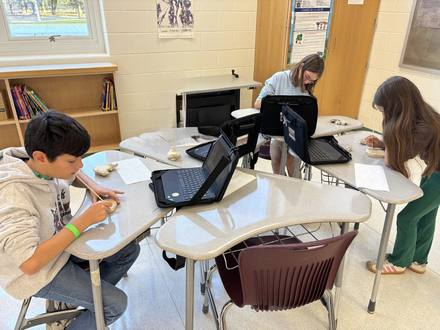
La classe EFAN à Great Neck


La Révolution française, en 4e
Portraits et documents rassemblés autour de deux figures de 1789.
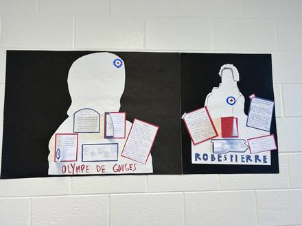
Olympe de Gouges et Robespierre, étudiés côte à côte
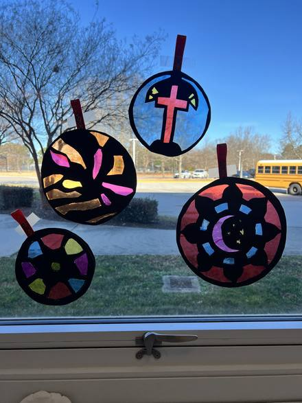
Des rosaces de papier à la fenêtre de la classe

Le travail dans la salle EFAN

Arts et histoire à Crossroads
La classe élémentaire travaille sur des figures qui ont changé l’histoire, en couleurs franches, et compose des blasons médiévaux.
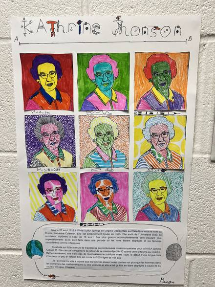
Katherine Johnson, à la manière d’Andy Warhol
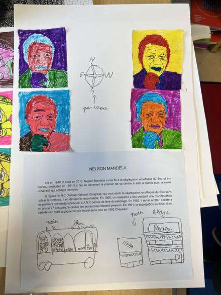
Nelson Mandela, portrait et biographie

Martin Luther King, portrait et biographie

Un troisième portrait et son texte

Six variations sur un même visage

« Honneur, bravoure et bon sens » — un blason à fleurs de lys

Les blasons au mur de la classe

Des musiciens, dessinés et mis en couleur
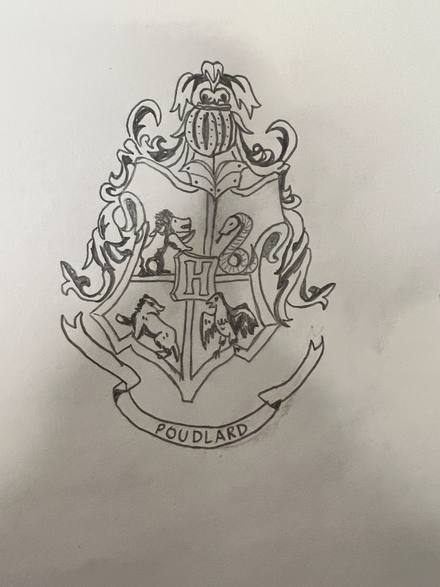
Un écusson de Poudlard, au crayon


La Seconde Guerre mondiale à Frank W. Cox
Les lycéens ont réalisé des affiches et une une de journal sur l’effort de guerre américain, la propagande et la place des femmes dans les usines.

« Bombes, femmes et Captain America » : industrie, propagande et effort de guerre
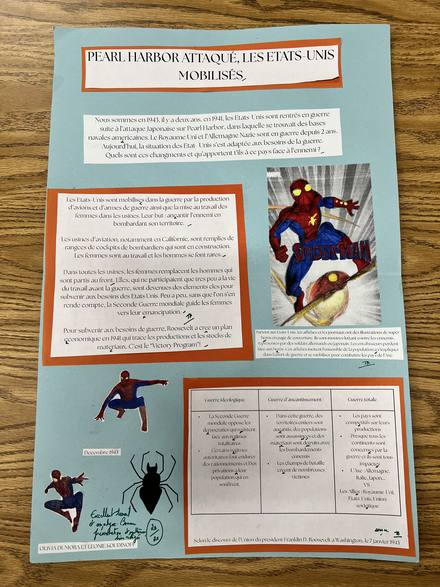
« Pearl Harbor attaqué, les États-Unis mobilisés »
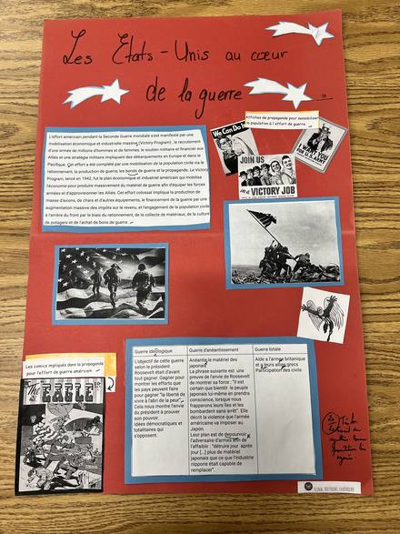
« Les États-Unis au cœur de la guerre »

Une une datée du 25 octobre 1942
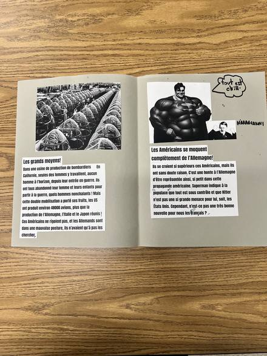
Un livret illustré, ouvert
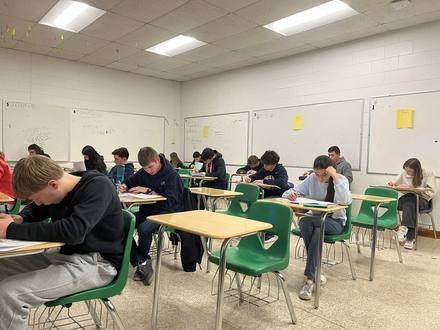
Une épreuve écrite dans la salle EFAN de Cox


John B. Dey, au fil des trimestres
La salle de classe élémentaire de John B. Dey, et les couloirs décorés pour la fin d’année.
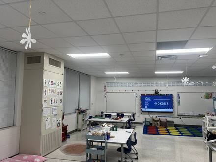
La salle de classe, prête pour la matinée

Des guirlandes de papier en travers du couloir
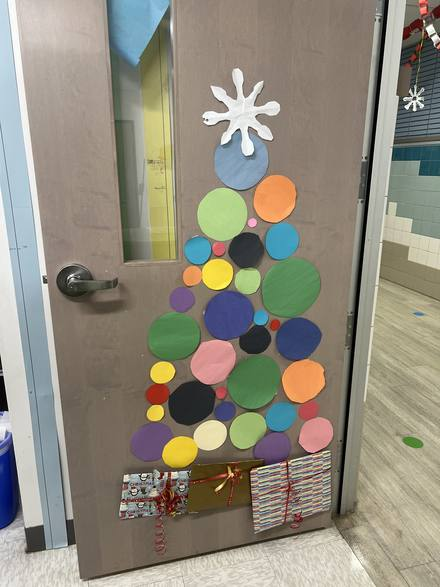
Une porte de classe transformée en sapin

Les viennoiseries pour les établissements d’accueil
Croissants et pains au chocolat apportés aux équipes des établissements américains qui accueillent les classes de l’EFAN : un remerciement devenu une tradition.

Les boîtes, à peine ouvertes

Avec l’équipe d’un établissement d’accueil

Un autre matin, une autre salle des professeurs
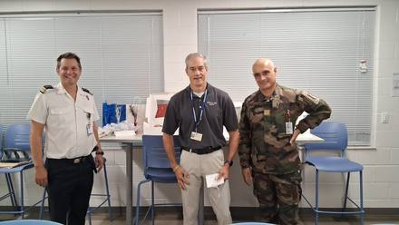
Les représentants de la Marine nationale qui accompagnent